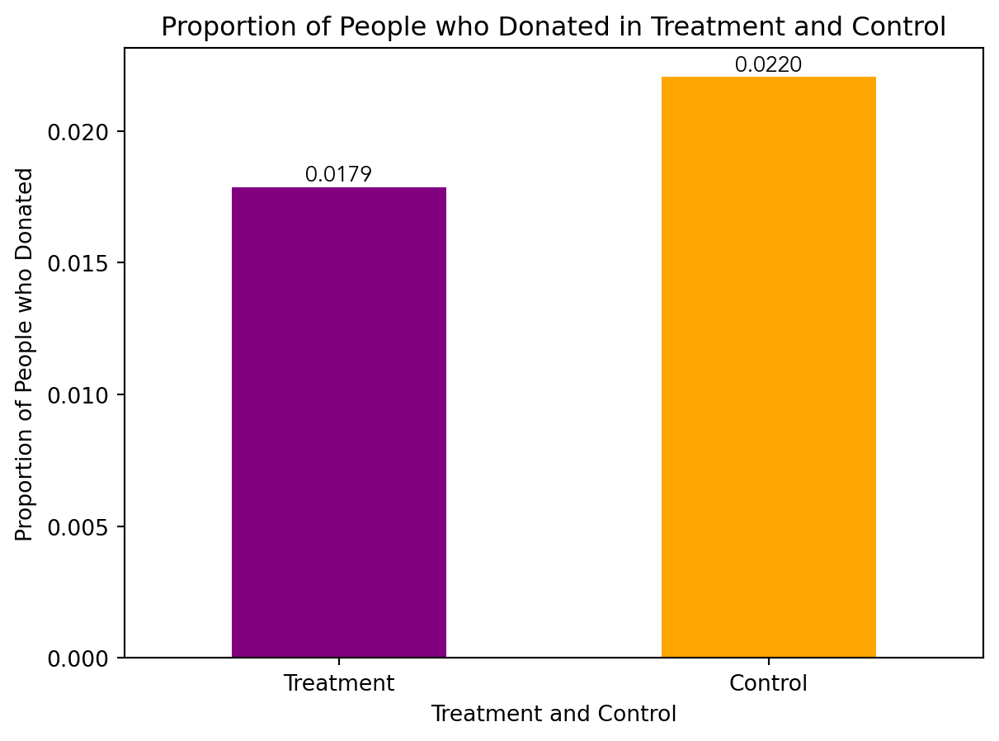
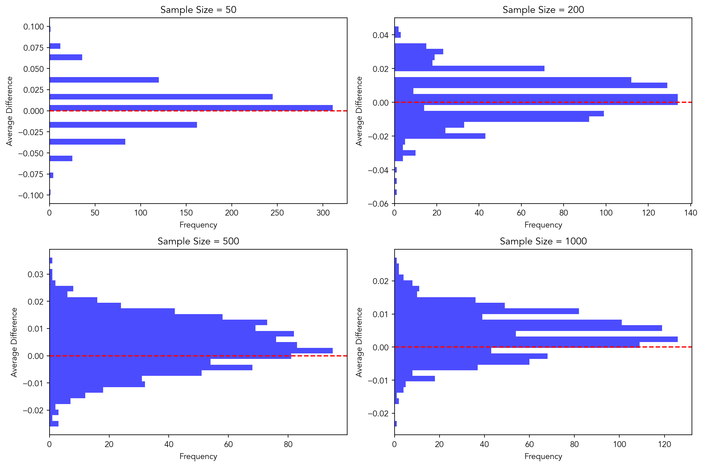

import numpy as np
import pandas as pd
from scipy.stats import t
from scipy.stats import ttest_ind
karlan_df = pd.read_stata('data/karlan_list_2007.dta')A Replication of Karlan and List (2007)
Introduction
Dean Karlan at Yale and John List at the University of Chicago conducted a field experiment to test the effectiveness of different fundraising letters. They sent out 50,000 fundraising letters to potential donors, randomly assigning each letter to one of three treatments: a standard letter, a matching grant letter, or a challenge grant letter. They published the results of this experiment in the American Economic Review in 2007. The article and supporting data are available from the AEA website and from Innovations for Poverty Action as part of Harvard’s Dataverse.
The goal of their project was to test the effectiveness of a matching grant on chartiable giving. Via their large-scale natural field experiment, they found that providing a match offer increases both the charitable revenue per solicitation and the response rate to the letters. However, the larger amount of the match ratio, (i.e. $3:$1 and $2:$1), relative to a smaller match ratio, ($1:$1), had no additional impact on the revenue per solicitation nor the response rate to the letter.
This project seeks to replicate their results.
Data
Description
Below is a general overview of the data from Karlan et. al 2007. A sample of approximately 50,000 individuals who had given to a charitable organization since 1991 were randomized and assigned into either a “match” treatment group or a control group. The treatment group was offered a matching grant conditional on their donation, with the goal to see if the match rate increases the likelihood of a donation in a charitable setting. This dataset contains information such as if the participant was part of the treatment or control, the match ratio, and the size of the donation, in addition to further characteristics about the donor and the donation they made.
karlan_df.describe()| treatment | control | ratio2 | ratio3 | size25 | size50 | size100 | sizeno | askd1 | askd2 | ... | redcty | bluecty | pwhite | pblack | page18_39 | ave_hh_sz | median_hhincome | powner | psch_atlstba | pop_propurban | |
|---|---|---|---|---|---|---|---|---|---|---|---|---|---|---|---|---|---|---|---|---|---|
| count | 50083.000000 | 50083.000000 | 50083.000000 | 50083.000000 | 50083.000000 | 50083.000000 | 50083.000000 | 50083.000000 | 50083.000000 | 50083.000000 | ... | 49978.000000 | 49978.000000 | 48217.000000 | 48047.000000 | 48217.000000 | 48221.000000 | 48209.000000 | 48214.000000 | 48215.000000 | 48217.000000 |
| mean | 0.666813 | 0.333187 | 0.222311 | 0.222211 | 0.166723 | 0.166623 | 0.166723 | 0.166743 | 0.222311 | 0.222291 | ... | 0.510245 | 0.488715 | 0.819599 | 0.086710 | 0.321694 | 2.429012 | 54815.700533 | 0.669418 | 0.391661 | 0.871968 |
| std | 0.471357 | 0.471357 | 0.415803 | 0.415736 | 0.372732 | 0.372643 | 0.372732 | 0.372750 | 0.415803 | 0.415790 | ... | 0.499900 | 0.499878 | 0.168561 | 0.135868 | 0.103039 | 0.378115 | 22027.316665 | 0.193405 | 0.186599 | 0.258654 |
| min | 0.000000 | 0.000000 | 0.000000 | 0.000000 | 0.000000 | 0.000000 | 0.000000 | 0.000000 | 0.000000 | 0.000000 | ... | 0.000000 | 0.000000 | 0.009418 | 0.000000 | 0.000000 | 0.000000 | 5000.000000 | 0.000000 | 0.000000 | 0.000000 |
| 25% | 0.000000 | 0.000000 | 0.000000 | 0.000000 | 0.000000 | 0.000000 | 0.000000 | 0.000000 | 0.000000 | 0.000000 | ... | 0.000000 | 0.000000 | 0.755845 | 0.014729 | 0.258311 | 2.210000 | 39181.000000 | 0.560222 | 0.235647 | 0.884929 |
| 50% | 1.000000 | 0.000000 | 0.000000 | 0.000000 | 0.000000 | 0.000000 | 0.000000 | 0.000000 | 0.000000 | 0.000000 | ... | 1.000000 | 0.000000 | 0.872797 | 0.036554 | 0.305534 | 2.440000 | 50673.000000 | 0.712296 | 0.373744 | 1.000000 |
| 75% | 1.000000 | 1.000000 | 0.000000 | 0.000000 | 0.000000 | 0.000000 | 0.000000 | 0.000000 | 0.000000 | 0.000000 | ... | 1.000000 | 1.000000 | 0.938827 | 0.090882 | 0.369132 | 2.660000 | 66005.000000 | 0.816798 | 0.530036 | 1.000000 |
| max | 1.000000 | 1.000000 | 1.000000 | 1.000000 | 1.000000 | 1.000000 | 1.000000 | 1.000000 | 1.000000 | 1.000000 | ... | 1.000000 | 1.000000 | 1.000000 | 0.989622 | 0.997544 | 5.270000 | 200001.000000 | 1.000000 | 1.000000 | 1.000000 |
8 rows × 48 columns
Balance Test
As an ad hoc test of their randomization mechanism, I have provided a series of tests that compare aspects of the treatment and control groups to assess whether they are statistically different from one another.
I have created a function called t_test_calc that calculates the t-statistic and the p-value to determine if there is a statistically signigicant difference between the variables in the treatment and test groups at a pre-determined confidence interval.
def t_test_calc(data, treatment_col, control_col, outcome_col):
treatment = data[data[treatment_col] == 1]
control = data[data[control_col] == 1]
mean_treatment = treatment[outcome_col].mean()
mean_control = control[outcome_col].mean()
diff_means = mean_treatment - mean_control
std_treatment = treatment[outcome_col].std()
std_control = control[outcome_col].std()
n_treatment = treatment[outcome_col].count()
n_control = control[outcome_col].count()
t_stat = diff_means / np.sqrt((std_treatment**2/n_treatment) + (std_control**2/n_control))
return t_stat, n_treatment, n_control
### T-stat calculation for mrm2 Variable###
t_stat_mrm2, n_treatment, n_control = t_test_calc(karlan_df, "treatment", "control", "mrm2")
dof = n_treatment + n_control - 2
p_value1 = (1 - t.cdf(np.abs(t_stat_mrm2), dof)) * 2
print(f"t-stat calculated for mrm2: {t_stat_mrm2:.4f}")
print(f"p-value calculated for mrm2: {p_value1:.4f}")
### T-stat calculation for Freq Variable###
t_stat_freq, n_treatment, n_control = t_test_calc(karlan_df, "treatment", "control", "freq")
dof_freq = n_treatment + n_control - 2
p_value_freq = (1 - t.cdf(np.abs(t_stat_freq), dof)) * 2
print(f"t-stat calculated for freq: {t_stat_freq:.4f}")
print(f"p-value calculated for freq:{p_value_freq:.4f}")t-stat calculated for mrm2: 0.1195
p-value calculated for mrm2: 0.9049
t-stat calculated for freq: -0.1108
p-value calculated for freq:0.9117##Linear regression for mrm2 and Freq variables
from sklearn.linear_model import LinearRegression
karlan_df.fillna({"mrm2": 0}, inplace=True)
X = karlan_df[['treatment']] # Feature
y = karlan_df['mrm2'] # Target variable
model = LinearRegression()
model.fit(X, y)
print('Coefficients for mrm2:', model.coef_)
print('Intercept for mrm2:', model.intercept_)Coefficients for mrm2: [0.01329623]
Intercept for mrm2: 12.99814226643495Above, I have tested the variable mrm2 & freq to see if there is a statistically significant difference between the treatment and control groups at a 95% confidence interval level. The variables mrm2 and freq represent the Number of Months since last donation and the number of prior dontations, respectively. Using the t-test-calc function, the calculated t-stat for mrm2 is 0.1195 and the p-value is 0.9049. This p-value is greater than the alpha value of 0.005, which means that we fail to reject the null hypothesis, and indicates that there is not enough evidence to conclude a statistically significant difference between the treatment and control groups when examining the number of months since their last donation, or the mrm2 variable.
For the freq variable, the t_stat and p_value calculated were -0.1108 and 0.9117, respectively. The calculated p-value of 0.9117 is greater than the alpha value of 0.05, and we once again fail to reject the null hypothesis. This indicates that there is not enough evidence to indicate a statistically significant difference between the treatment and control groups when comparing the donation frequency. These values are similar to those included in table 1 of Karlan et al. I believe table 1 was included in the paper to show the sample statistics of the member activity, census demographics and the state-level activity of organization.
Experimental Results
Charitable Contribution Made
First, I analyzed whether matched donations lead to an increased response rate of making a donation.
import matplotlib as plt
from matplotlib import rcParams
karlan_df_copy = karlan_df.copy()
karlan_grouped = karlan_df.groupby(["treatment", "control"])["gave"].mean()
ax = karlan_grouped.plot(kind='bar', color = ["purple", "orange"])
rcParams['font.family'] = 'serif' # Change 'serif' to the desired font family
rcParams['font.serif'] = ['Avenir']
ax.set_xlabel("Treatment and Control")
ax.set_ylabel("Proportion of People who Donated")
ax.set_title("Proportion of People who Donated in Treatment and Control")
group_labels = ['Treatment', 'Control']
ax.set_xticklabels(group_labels, rotation = 0)
for i, v in enumerate(karlan_grouped):
ax.text(i, v, f'{v:.4f}', ha='center', va='bottom')
I also ran a t-test between the treatment and control groups on the binary outcome of whether any charitable donation was made, in addition to running a bivariate linear regression to demonstrate the same finding.
from scipy.stats import ttest_ind
import scipy.stats as stats
karlan_treatment = karlan_df[karlan_df["treatment"] == 1]
karlan_control = karlan_df[karlan_df["control"] == 1]
t_statistic, p_value = stats.ttest_ind(karlan_treatment["gave"], karlan_control["gave"])
print("T-statistic:", t_statistic)
print("p-value:", p_value)
#Bivariate Linear regression on gave
X = karlan_df[['treatment']] # Features
y = karlan_df['gave'] # Target variable
model = LinearRegression()
model.fit(X, y)
print('Coefficients:', model.coef_)
print('Intercept:', model.intercept_)T-statistic: 3.101361000543946
p-value: 0.0019274025949016988
Coefficients: [0.00418035]
Intercept: 0.017858212980165173The output indicates a t-statistic of approximately 3.10 and a p-value of approximately 0.002.
In interpreting these results, it’s important to recall that the t-statistic measures the size of the difference between the treatment and control groups relative to the variability in the data. Thus, the larger the t-statistic, the more the means of the two groups differ. In this case, a t-statistic of 3.10 suggests a substantial difference between the means of the treatment and control groups.
The p-value, on the other hand, assesses the probability of observing such a large difference if there were no true difference between the treatment and control groups (i.e., if the null hypothesis were true). A small p-value (in this case, 0.002) indicates that the observed difference is unlikely to have occurred by random chance alone. Interpreted in the context of the experiment, these statistical results suggest that there is a statistically significant difference in charitable giving between the treatment and control groups. In other words, the intervention or treatment likely had an effect on the behavior of individuals in the treatment group compared to those in the control group.
Therefore, this finding may imply that the certain interventions or nudges implemented in the treatment group, the matching and challenge grant letters, were effective in encouraging charitable giving behavior. Understanding the effectiveness of these interventions sheds light on the psychological mechanisms and motivations behind charitable giving, potentially informing future strategies for promoting philanthropy and altruism.
Probit Regression
Next I ran a probit regression where the outcome variable is whether any charitable donation was made and the explanatory variable was assesment to treatment or control.
#Probit Regression
import statsmodels.api as sm
X = karlan_df[['treatment', 'control']]
y = karlan_df['gave']
model = sm.Probit(y, X).fit()
print(model.summary())Optimization terminated successfully.
Current function value: 0.100443
Iterations 7
Probit Regression Results
==============================================================================
Dep. Variable: gave No. Observations: 50083
Model: Probit Df Residuals: 50081
Method: MLE Df Model: 1
Date: Sat, 01 Jun 2024 Pseudo R-squ.: 0.0009783
Time: 11:40:07 Log-Likelihood: -5030.5
converged: True LL-Null: -5035.4
Covariance Type: nonrobust LLR p-value: 0.001696
==============================================================================
coef std err z P>|z| [0.025 0.975]
------------------------------------------------------------------------------
treatment -2.0134 0.015 -131.734 0.000 -2.043 -1.983
control -2.1001 0.023 -90.073 0.000 -2.146 -2.054
==============================================================================Probit regression is a type of regression analysis used to model binary outcomes, similar to logistic regression. In probit regression, the relationship between the predictor variables and the binary outcome is modeled using the cumulative distribution function of the standard normal distribution (also known as the probit function). The model assumes that the linear combination of predictor variables is associated with the probability of the binary outcome.
Differences between Match Rates
Next, I assessed the effectiveness of different sizes of matched donations on the response rate.
todo: Use a series of t-tests to test whether the size of the match ratio has an effect on whether people donate or not. For example, does the 2:1 match rate lead increase the likelihood that someone donates as compared to the 1:1 match rate? Do your results support the “figures suggest” comment the authors make on page 8?
# T-test for ratio2 (2:1 match) compared to 1:1 match
t_stat_ratio2, p_value_ratio2 = ttest_ind(karlan_df[karlan_df['ratio2'] == 1]['gave'], karlan_df[karlan_df['ratio2'] == 0]['gave'])
# T-test for ratio3 (3:1 match) compared to 1:1 match
t_stat_ratio3, p_value_ratio3 = ttest_ind(karlan_df[karlan_df['ratio3'] == 1]['gave'], karlan_df[karlan_df['ratio3'] == 0]['gave'])
print("T-Test Results for 2:1 match ratio:")
print(f"T-Statistic: {t_stat_ratio2}, P-Value: {p_value_ratio2}")
print("\nT-Test Results for 3:1 match ratio:")
print(f"T-Statistic: {t_stat_ratio3}, P-Value: {p_value_ratio3}")T-Test Results for 2:1 match ratio:
T-Statistic: 1.6725548025261596, P-Value: 0.09442121711611902
T-Test Results for 3:1 match ratio:
T-Statistic: 1.7562202653799, P-Value: 0.07905691730335489Overall, based on these results, we do not have enough evidence to conclude that either the 2:1 match ratio or the 3:1 match ratio has a significantly different effect on charitable donations compared to the 1:1 match ratio. These findings match those of Karlan et al. They too found that “that neither the match threshold nor the example amount had a meaningful influence on behavior.”
import pyrsm as rsm
reg_ratio = rsm.model.regress(
data = {"Karlan DF": karlan_df},
rvar = "gave",
evar = "ratio"
)
reg_ratio.summary()Linear regression (OLS)
Data : Karlan DF
Response variable : gave
Explanatory variables: ratio
Null hyp.: the effect of x on gave is zero
Alt. hyp.: the effect of x on gave is not zero
coefficient std.error t.value p.value
Intercept 0.018 0.001 16.225 < .001 ***
ratio[1] 0.003 0.002 1.661 0.097 .
ratio[2] 0.005 0.002 2.744 0.006 **
ratio[3] 0.005 0.002 2.802 0.005 **
Signif. codes: 0 '***' 0.001 '**' 0.01 '*' 0.05 '.' 0.1 ' ' 1
R-squared: 0.0, Adjusted R-squared: 0.0
F-statistic: 3.665 df(3, 50079), p.value 0.012
Nr obs: 50,083In this regression, each ratio coefficient represents the effect of the corresponding ratio variable on charitable donations, holding other variables constant. Ratio[1]: The coefficient is positive (0.003), but it is not statistically significant at the 0.05 significance level (p = 0.097). Ratio[2]: The coefficient is positive (0.005) and statistically significant (p = 0.006), indicating that for each unit increase in ratio[2], charitable donations increase by 0.005 units, holding other variables constant. Ratio[3]: Similar to Ratio[2], the coefficient is positive (0.005) and statistically significant (p = 0.005), suggesting that for each unit increase in ratio[3], charitable donations increase by 0.005 units, holding other variables constant. The intercept represents the expected value of the dependent variable (charitable donations) when all explanatory variables (ratio) are zero. In this case, the intercept is statistically significant (p < 0.001), indicating that when the ratio is zero, there is still a non-zero expected value of charitable donations.
The R-squared value (0.0) indicates that the model does not explain much of the variability in charitable donations. The F-statistic (3.665) tests the overall significance of the model. With a p-value of 0.012, the model is statistically significant, suggesting that at least one of the explanatory variables has a significant effect on charitable donations.
Overall, the results suggest that ratio[2] and ratio[3] have a statistically significant positive effect on charitable donations, while ratio[1] does not have a statistically significant effect. However, it’s essential to consider the context of the study and potential limitations when interpreting these findings.
# response rate difference between 1:1 and 2:1 match ratios
rr_1_1 = len(karlan_df[(karlan_df['ratio'] == 1) & (karlan_df['gave'] == 1)]) / len(karlan_df[karlan_df['ratio'] == 1])
rr_2_1 = len(karlan_df[(karlan_df['ratio'] == 2) & (karlan_df['gave'] == 1)]) / len(karlan_df[karlan_df['ratio'] == 2])
rr_difference_1_2 = rr_2_1 - rr_1_1
# response rate difference between 2:1 and 3:1 match ratios
rr_3_1 = len(karlan_df[(karlan_df['ratio'] == 3) & (karlan_df['gave'] == 1)]) / len(karlan_df[karlan_df['ratio'] == 3])
rr_difference_2_3 = rr_3_1 - rr_2_1
print("Response Rate Difference between 1:1 and 2:1 Match Ratios:", rr_difference_1_2)
print("Response Rate Difference between 2:1 and 3:1 Match Ratios:", rr_difference_2_3)
###
coeff_ratio_1 = 0.003
coeff_ratio_2 = 0.005
coeff_ratio_3 = 0.005
# response rate diff between 1:1 and 2:1 match ratios
rr_diff_coef_1_2 = coeff_ratio_2 - coeff_ratio_1
# response rate diff between 2:1 and 3:1 match ratios
rr_diff_coef_2_3 = coeff_ratio_3 - coeff_ratio_2
print("Response Rate Difference (from Coefficients) between 1:1 and 2:1 Match Ratios:", rr_diff_coef_1_2)
print("Response Rate Difference (from Coefficients) between 2:1 and 3:1 Match Ratios:", rr_diff_coef_2_3)Response Rate Difference between 1:1 and 2:1 Match Ratios: 0.0018842510217149944
Response Rate Difference between 2:1 and 3:1 Match Ratios: 0.00010002398025293902
Response Rate Difference (from Coefficients) between 1:1 and 2:1 Match Ratios: 0.002
Response Rate Difference (from Coefficients) between 2:1 and 3:1 Match Ratios: 0.0The response rate difference between individuals in the 1:1 match ratio group and the 2:1 match ratio group is approximately 0.0019 (or 0.19%). The response rate difference (derived from the coefficients) between the 1:1 match ratio group and the 2:1 match ratio group is 0.002 (or 0.2%).
The response rate difference between individuals in the 2:1 match ratio group and the 3:1 match ratio group is approximately 0.0001 (or 0.01%), whereas the response rate difference (derived from the coefficients) between the 2:1 match ratio group and the 3:1 match ratio group is 0.0 (or no difference).
1:1 vs. 2:1 Match Ratios: Both the direct data analysis and the coefficient analysis suggest that individuals in the 2:1 match ratio group have a slightly higher response rate compared to those in the 1:1 match ratio group. The difference is small but consistent across both analyses.
2:1 vs. 3:1 Match Ratios: According to the direct data analysis, there is almost no difference in the response rates between the 2:1 match ratio group and the 3:1 match ratio group. However, the coefficient analysis indicates that the response rate difference between these groups is exactly zero.
Overall, based on these findings, it seems that increasing the size of matched donations from 1:1 to 2:1 may lead to a slightly higher response rate, but further increasing the match ratio beyond 2:1 may not have a significant additional impact on the response rate.
Size of Charitable Contribution
In this subsection, I analyzed the effect of the size of matched donation on the size of the charitable contribution.
from scipy.stats import ttest_ind
treatment_amount = karlan_df[karlan_df['treatment'] == 1]['amount']
control_amount = karlan_df[karlan_df['treatment'] == 0]['amount']
# Perform the t-test
t_statistic, p_value = ttest_ind(treatment_amount, control_amount)
# Print the results
print("T-statistic:", t_statistic)
print("P-value:", p_value)T-statistic: 1.8605020225753781
P-value: 0.06282038947470683T-test Approach: If the p-value from the t-test is less than a chosen significance level (e.g., 0.05), it indicates that there is a statistically significant difference in donation amounts between the treatment and control groups. This suggests that treatment status, such as the use of a matching grant letter or challenge grant letter, does have a statistically significant effect on donation amounts.
Bivariate Linear Regression Approach: If the coefficient for the ‘treatment’ variable in the linear regression model is statistically significant (p-value < 0.05), it indicates that treatment status has a significant effect on donation amounts. The sign of the coefficient indicates the direction of the effect (positive or negative), and the magnitude represents the size of the effect.
Both the t-test approach and the Bivariate Linear Regression approach provide insights into the relationship between the treatment status and donation amounts. They help in understanding whether being in the treatment group influences the donation amounts compared to the control group.
donated_df = karlan_df[karlan_df['amount'] > 0]
#added a constant term for the intercept
donated_df['intercept'] = 1
X = donated_df[['intercept', 'treatment']]
y = donated_df['amount']
model = sm.OLS(y, X).fit()
print(model.summary())
###
treatment_amount = donated_df[donated_df['treatment'] == 1]['amount']
control_amount = donated_df[donated_df['treatment'] == 0]['amount']
t_statistic, p_value = ttest_ind(treatment_amount, control_amount)
print("T-statistic:", t_statistic)
print("P-value:", p_value) OLS Regression Results
==============================================================================
Dep. Variable: amount R-squared: 0.000
Model: OLS Adj. R-squared: -0.001
Method: Least Squares F-statistic: 0.3374
Date: Sat, 01 Jun 2024 Prob (F-statistic): 0.561
Time: 11:40:07 Log-Likelihood: -5326.8
No. Observations: 1034 AIC: 1.066e+04
Df Residuals: 1032 BIC: 1.067e+04
Df Model: 1
Covariance Type: nonrobust
==============================================================================
coef std err t P>|t| [0.025 0.975]
------------------------------------------------------------------------------
intercept 45.5403 2.423 18.792 0.000 40.785 50.296
treatment -1.6684 2.872 -0.581 0.561 -7.305 3.968
==============================================================================
Omnibus: 587.258 Durbin-Watson: 2.031
Prob(Omnibus): 0.000 Jarque-Bera (JB): 5623.279
Skew: 2.464 Prob(JB): 0.00
Kurtosis: 13.307 Cond. No. 3.49
==============================================================================
Notes:
[1] Standard Errors assume that the covariance matrix of the errors is correctly specified.
T-statistic: -0.5808388615237938
P-value: 0.5614758782284279/var/folders/bj/t618x2614s9c896326lrdjw40000gn/T/ipykernel_81155/3304687072.py:4: SettingWithCopyWarning:
A value is trying to be set on a copy of a slice from a DataFrame.
Try using .loc[row_indexer,col_indexer] = value instead
See the caveats in the documentation: https://pandas.pydata.org/pandas-docs/stable/user_guide/indexing.html#returning-a-view-versus-a-copy
donated_df['intercept'] = 1Based on these results, we can conclude that there is no significant difference in the amount donated by individuals in the treatment group compared to those in the control group. Therefore, the treatment coefficient does not have a causal interpretation regarding the effectiveness of the treatment on the amount donated. It suggests that the treatment (whatever it may be) does not significantly influence the donation amount.
import matplotlib.pyplot as plt
#filtering the dataset for if a donation was made
donated_treatment = karlan_df[(karlan_df['amount'] > 0) & (karlan_df['treatment'] == 1)]
donated_control = karlan_df[(karlan_df['amount'] > 0) & (karlan_df['treatment'] == 0)]
# sample averages for control and treatment
avg_treatment = donated_treatment['amount'].mean()
avg_control = donated_control['amount'].mean()
# create histograms
plt.figure(figsize=(10, 5))
#histogram for treatment group
plt.subplot(1, 2, 1)
plt.hist(donated_treatment['amount'], color='blue', alpha=0.7)
plt.axvline(avg_treatment, color='red', linestyle='dashed', linewidth=1, label='Sample Average')
plt.xlabel('Donation Amount')
plt.ylabel('Frequency')
plt.title('Treatment Group')
plt.legend()
# histogram for control group
plt.subplot(1, 2, 2)
plt.hist(donated_control['amount'], color='green', alpha=0.7)
plt.axvline(avg_control, color='red', linestyle='dashed', linewidth=1, label='Sample Average')
plt.xlabel('Donation Amount')
plt.ylabel('Frequency')
plt.title('Control Group')
plt.legend()
plt.tight_layout()
plt.show()Simulation Experiment
As a reminder of how the t-statistic “works,” in this section I use simulation to demonstrate the Law of Large Numbers and the Central Limit Theorem.
Suppose the true distribution of respondents who do not get a charitable donation match is Bernoulli with probability p=0.018 that a donation is made.
Further suppose that the true distribution of respondents who do get a charitable donation match of any size is Bernoulli with probability p=0.022 that a donation is made.
Law of Large Numbers
import numpy as np
import matplotlib.pyplot as plt
p_control = 0.018
p_treatment = 0.022
num_draws = 10000
cumulative_average = np.zeros(num_draws)
total_difference = 0
for i in range(num_draws):
control_draw = np.random.binomial(1, p_control)
treatment_draw = np.random.binomial(1, p_treatment)
difference = treatment_draw - control_draw
total_difference += difference
cumulative_average[i] = total_difference / (i + 1)
plt.plot(cumulative_average, color='blue')
plt.axhline(y=p_treatment - p_control, color='red', linestyle='--', label='True Difference')
plt.xlabel('Number of Draws')
plt.ylabel('Cumulative Average of Difference')
plt.title('Cumulative Average of Difference in Proportions')
plt.legend()
plt.show()As evident in the graph, as the number of draws increases, the cumulative average of the difference in proportions becomes more stable and approaches the true difference in means. This demonstrates that as the sample size becomes larger, the estimate of the difference in means becomes more accurate and reliable. Therefore, as the sample size increases, the random sampling variability decreases, which indicates that the larger samples provide more precise estimates of population parameters and allows statisticians to make more explicit causal claims in experimentation. (assuming that all other statistical theories are upheld)
Central Limit Theorem
p_control = 0.018
p_treatment = 0.022
sample_sizes = [50, 200, 500, 1000]
num_simulations = 1000
average_differences = {}
for n in sample_sizes:
average_differences[n] = []
for _ in range(num_simulations):
control_draws = np.random.binomial(1, p_control, size=n)
treatment_draws = np.random.binomial(1, p_treatment, size=n)
average_difference = np.mean(treatment_draws) - np.mean(control_draws)
average_differences[n].append(average_difference)
plt.figure(figsize=(12, 8))
for i, n in enumerate(sample_sizes):
plt.subplot(2, 2, i+1)
plt.hist(average_differences[n], bins=30, color='blue', alpha=0.7, orientation='horizontal')
plt.ylabel('Average Difference')
plt.xlabel('Frequency')
plt.title(f'Sample Size = {n}')
plt.axhline(y=0, color='red', linestyle='--')
plt.tight_layout()
plt.show()
The histograms show the distribution of sample averages, which are the averages of a large number of samples taken from the population. According to the Central Limit Theorem, regardless of the shape of the population distribution, the distribution of sample averages tends to be normal (bell-shaped) as the sample size increases.
In a normal distribution, the mean (average) is located at the center of the distribution. As we increase the sample size, the distribution of sample averages becomes increasingly normal, and the mean of this distribution approaches the true population mean. Since we’re plotting the distribution of sample averages, and zero represents the mean difference (which would be the population mean difference if the samples were large enough), it’s expected that zero would be located in the center or “middle” of the distribution.
Therefore, in the histograms representing the Central Limit Theorem, zero typically represents the “middle” of the distribution. As the sample size increases, the distribution becomes more concentrated around zero, indicating that the sample averages are more likely to be close to the true population mean difference.